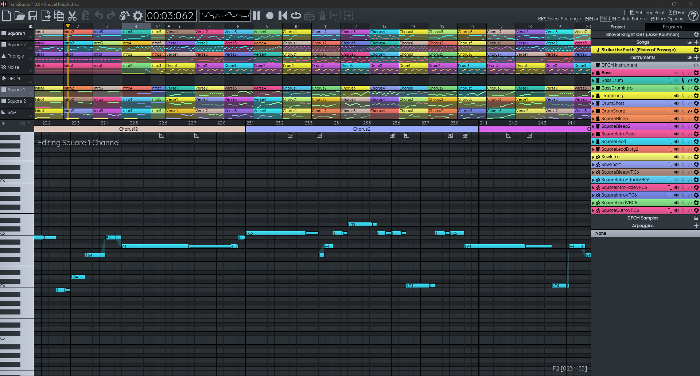
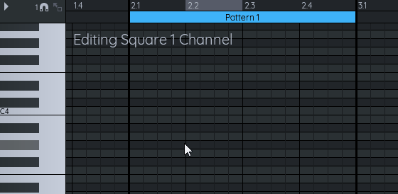
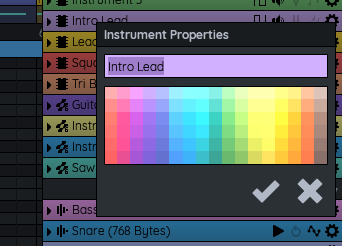
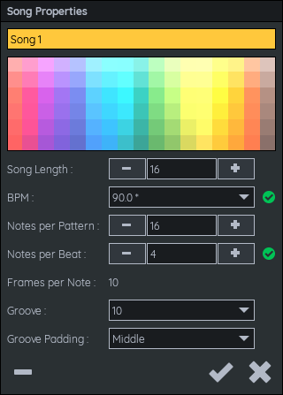
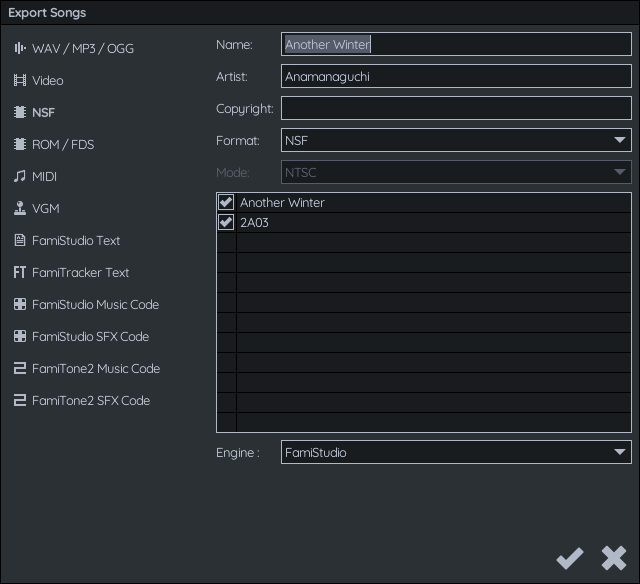

FamiStudio 入门实战：从零写出你的第一首 8-bit 曲子
5 步走完 FamiStudio 全流程，从新建工程到导出 NSF，避开三个新手必踩的坑，做出能上 NES 真机的 chiptune。
这篇教程结束时，你能独立完成一首完整的 8-bit 风格曲子——从打开软件、敲下第一个音符，到导出可以在 NES 模拟器或真机上播放的 NSF 文件。不需要任何 chiptune 基础，你只需要一台 Windows 电脑和十分钟。
准备：你需要什么
FamiStudio 是免费开源的 chiptune 制作工具，官网上有完整的功能介绍和截图。跨平台支持 Windows、Mac、Linux，还有 Android 移动版。我们用桌面版来演示，下载安装包，解压到任意目录，双击 FamiStudio.exe 就能跑，不依赖任何运行库。
第一步：新建工程，认识界面
打开软件，默认就给你建好了一个空白工程，先别急着写音符。你得先搞清楚三个核心区域各自管什么，这一步搞混了后面会反复撞墙。

- 工程浏览器（Project Explorer）：左上角树状图，管整个项目——歌曲列表、乐器、琶音、DPCM 采样都在这里切换。右键任意节点可以新增、重命名、删除。
- 钢琴卷帘（Piano Roll）：中间最大的那块，这是你写音符的主战场。横轴是时间（格子），纵轴是音高。点击放音符，拖拽移动，右键擦除。
- 属性面板：右侧，选中什么就显示什么的参数。乐器的 ADSR 包络、歌曲的 BPM、扩展芯片开关，全在这里调。
现在点工程浏览器里的「歌曲 1」，下方会出现音序器（Sequencer）——横向排列的格子是 Pattern 槽位，当前选中哪个槽位，卷帘里就显示哪个 Pattern 的内容。
第二步：敲下第一个音符
卷帘里点一下，一个音符就放上去了。但先别瞎点，有几个操作习惯现在养成能省你后面大量时间：
- 音符长度默认是当前工具选中的值。工具栏上有一排格子图标，从 1/64 全音符到 8 分音符都有，选哪个，点出来的音符默认就是那个长度。
- Qwerty 键盘映射：按 FamiStudio 键位可以直接用电脑键盘弹——数字行是低音区，上排字母是高音区，空格键播放。在菜单里切换一下就能用，手感比鼠标点好太多。
- 复制粘贴是你的好朋友：写好一小段节奏，选中 Ctrl+C，然后在后面的格子里 Ctrl+V 连续粘，很快就能铺完一个 16 格 Pattern。

写一个简单的 16 格低音线试试——用三角波通道（Triangle），从低八度 C 开始，每 4 格跳一次，做一个 C-G-Am-F 的循环。写完按空格试听，是不是已经有那味儿了？
第三步：调一把像样的音色
默认乐器音色偏"干"，像没开混响的合成器预设。好消息是 FamiStudio 的乐器编辑非常直观——选中一个乐器，属性面板左侧的箭头展开，你会看到 ADSR 四个参数：
- Attack（起音）：0~31，数字越小音头越陡，0 是瞬间发声，适合方波做主旋律；
- Decay（衰减）：从峰值掉到持续电平的速度，长一点声音更"厚"；
- Sustain（持续电平）：按键按住不动时维持的音量，0 就是纯打击乐，最大就是长音；
- Release（释音）：松手后音完全消失的时间，决定尾巴多长。

这四个参数组合起来能调出非常多样的音色——方波快 Attack 短 Release 做 lead，三角波长 Sustain 做贝斯，噪声通道短 Decay 做军鼓。调的时候多试听，没有标准答案，耳朵收货。
第四步：编排成曲，设置节拍
你在卷帘里写的是单个 Pattern，但整首歌是由一串 Pattern 拼接起来的。点歌曲旁边的齿轮图标，打开歌曲属性对话框：

重点关注三个字段：
- 歌曲长度：整首歌排多少个 Pattern 槽位，默认 16，循环的话一般 32 或 64 比较够用；
- 每 Pattern 音符数：单个 Pattern 有多长，默认 16 格（等于 4/4 拍 4 小节，每小节 4 拍，每拍 4 格）；
- BPM：直接输你想要的速度，软件自动换算成 NES 帧。
常用节奏速查表记一下，拼拍号不用算：
| 想要的感觉 | 每 Pattern 音符数 |
|---|---|
| 2/4 进行曲 | 8 |
| 3/4 华尔兹 | 12 |
| 4/4 常规流行 | 16 |
| 5/4 爵士 | 20 |
| 6/8 复合拍 | 24（BPM 翻倍） |
在音序器里，每个通道可以独立编排 Pattern 序列——主旋律通道编 0, 1, 0, 2 这种循环，贝斯通道可以一直挂 Pattern 0 跟。写完按空格键从头到尾试听一遍，哪里衔接不自然，回到对应 Pattern 里改。
第五步：导出你的第一首歌
觉得差不多了？点菜单文件 → 导出，你有好几个选项：

- NSF：NES Sound Format，chiptune 的标准分发格式，任何主流模拟器（FCEUX、Mesen）和很多播放器（ModPlayer、Winamp 插件）都能直接播放。这是我们最常用的导出格式；
- ROM（NES 文件）：直接生成一个能在 NES 真机或模拟器里运行的游戏 ROM，加载后自动循环播放你的曲子；
- WAV：导出成 PCM 音频，方便你传到视频平台或做后期混音；
- 视频：自动生成一段钢琴卷帘可视化视频，很适合发 B 站。
导出 NSF 时注意两个选项：循环要不要勾上（一般都勾），还有芯片切换——如果你没用扩展芯片就保持默认 2A03 即可。导出映射器和扩展芯片的对应关系、更多导出选项的说明，FamiStudio文档 里都有详细表。
新手最容易翻车的三个点
卡点一：音符放不进去，卷帘灰的
你大概率是选中了错误的通道。每个 Pattern 里六个通道（2A03 原生两方能有四个：方波 ×2、三角波、噪声波，加上 DPCM 采样通道），你在某个通道的卷帘区域点击才能放音。上面通道是灰的？回到工程属性里启用扩展芯片。
卡点二：速度太快或太慢，BPM 调不准
FamiStudio 有两种节拍模式：FamiStudio 模式直接输 BPM，FamiTracker 模式用 Speed + Tempo 双参数。新手别碰后者，在歌曲属性里确认用的是 FamiStudio 模式，直接填你想要的 BPM 数值就行。某些 BPM 值软件会用 Groove 序列逼近（因为 NES 以 60fps 跑，不是所有 BPM 都能整除），Groove Padding 选中间位置，最不容易听出不匀。
卡点三：导出 ROM 后黑屏没声音
90% 是映射器选错了。打开工程属性，确认工程用的扩展芯片和你导出 ROM 时选的映射器一致——只用原生 2A03 的话选 NROM 或 Mapper 0；用了 VRC6 扩展就必须选 VRC6a 映射器。这个在工程创建时就要确认好，后期改映射器会让 Pattern 里的通道全部错位。
进阶：让你的曲子跳出方波圈
原生 2A03 只有四个通道，音色全靠 ADSR 组合来凑。想玩出花样，试试扩展芯片：VRC6 加锯齿波贝斯，VRC7 带来六通道 FM 合成，FDS 提供可循环波形的磁带机音源。每个扩展芯片在工程属性里一键开关，开关之后新通道自动出现在卷帘里——多一个芯片等于多一条或几条新通道供你编排。
另外，工具栏上有个清理图标，大改之后随手跑一下，合并重复 Pattern、删掉没用上的乐器和采样，工程会干净很多。定稿导出 NSF 前记得做一次完整清理。
FamiStudio 的中文资料相对零散，我把整理过的内容同步到了 GitHub、Gitee 和 GitCode 三个仓库，想查阅更完整的参考资料随时可以去翻。